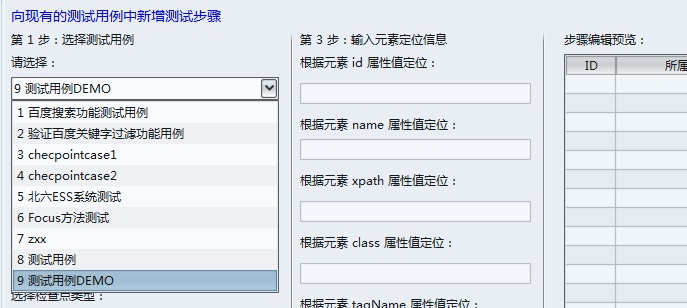

第一步：创建数据库
Phoenix WEB测试模块使用的数据库是MySql，程序界面上的重要数据，如测试用例列表、计划列表等，都是从数据库读取而来，再者创建的用例信息也是要保存到库中的，故在使用该工具之前，必须先创建数据，调整数据库的连接方式。否则工具会因无法连接数据库而无法启动。
创建数据库的方法为：
1. 到 下载专区 下载创建数据库必需的程序文件。点击查看创建步骤...
2. 创建名称为：Phoenix ，字符集编码为 UTF-8 的数据库，创建方式及使用的工具请自选。
3. 根据文件中创建数据表的SQL语句，创建各个表。
4. 到程序的安装目录下，找到“config”文件夹，打开“phoenix.properties”配置文件，修改“DB.url”关键字，修改完成后的格式如：DB.url=jdbc:mysql://localhost:3306/phoenix?useUnicode=true&characterEncoding=utf-8.
完成后如图:
第二步：创建新用例
操作单元是页面元素操作的最小单位，由测试用例组织操作单元的流程走向。创建用例的步骤为：
1. 启动主程序，在主程序界面依次点击”工具 --> 新建用例菜单“
2. 在弹出的界面中输入新用例的名称（中文或英文），然后点击”确定创建“按钮。如图：

第三步：选择用例
1. 回到程序主界面，如果主界面的”选择测试用例取“没有显示我们刚才创建的用例，则点击主界面的”刷新操作单元页“来刷新用例列表，然后选择我们刚才创建的用例。如：”测试用例DEMO“。如图：

2. 按照程序界面提示的顺序，选择操作步骤的类型，本工具支持33种对页面元素的操作。选择的每一种操作类型，界面都会给出需要提供的属性信息提示。如图：

3. 如果把该操作单元定为检查点，则选择”是检查点“选项，否则使用默认。如果选择了”是检查点“，如果选择的检查类型为”CheckIsEqual“，输入期望值后，运行时程序会将该检查点从页面取到的值和给予的期望值进行比较。测试报告中会体现该检查点的通过或失败详细信息。如图：
4. 输入步骤的备注信息。这是一个必输项，该备注是唯一能标识步骤作用的信息。然后填写元素定位信息，可使用属性录制模块进行录制。不需要全部填写，只需填写元素存在的属性值。程序会根据填写的定位信息动态定位该元素。填写完成后如图：
执行该步骤时，如果根据id没能定位到元素，则程序会根据name定位，如果定位成功则执行对该元素的操作，如果失败则继续根据xpath定位，如果所有的信息都没有定位成功，则会循环重试3次（次数可配置），如果仍为失败，则会报告该步骤失败，继续执行后续的操作单元。
5. 点击主程序界面的新增操作单元按钮，待界面显示左下角显示“操作执行完成”字样时，且界面表格中显示了新增的步骤，则说明操作单元插入成功了。如图：
其他操作单元均按照此页提供的方法插入即可。对于一些特殊的操作类型，如需了解详细信息，请查看 问题速查 页面。